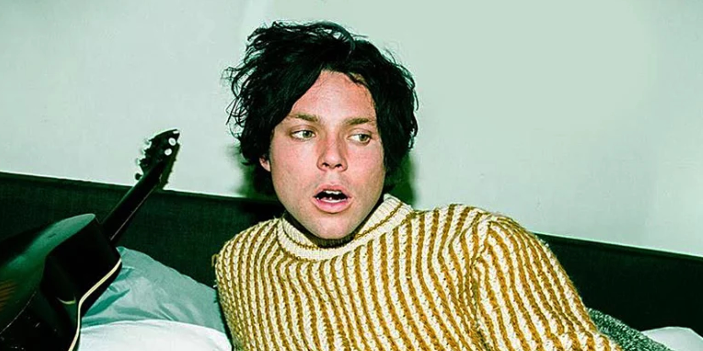

CS4082 Report
by Annika Jungfleisch (22359923)
My website is about 5 Seconds of Summer, or 5SOS, an Australian pop-rock band.
They formed in late 2011, and I have supported them since mid-2012.
I always had a problem with their
website, so I took this assignment as a chance to try and work out a better design for their site.
I took inspiration from the website of Imagine Dragons.
Their website is beautifully designed, and the layout changes when the website is resized.
I gave my website four pages, a Home page, a Tour page, a Media page,
and an About page. With more time I would have added pages for each band member.
The Home page is supposed to introduce the viewer to the topic of the website, and link to important external websites like the social media accounts.
The Tour page allows the viewer to get an overview of upcoming tour dates and the possibility of buying tickets from an external
website, in this case, Ticketmaster.uk. There would be more tour dates on a finished website, but I stopped at four dates as this website should only be a demonstration.
As 5SOS is not on tour now, I used old tour dates as an example.
The Media page gives the viewer background information on the different albums/eras 5SOS went
through. Starting with the most recent one and ending with the furthest in the past. Next to every text is a picture carousel with five images.
Mostly it is a picture of the cover and the track-list of the album produced in that era, a group picture of 5SOS from that time and two pictures from their tour.
As they were not consistently touring, sometimes the tour pictures got replaced by group pictures.
The About page gives the viewer a summary of who the band members are and what their role inside the band is.
The text below explains how 5SOS was formed and links to the Media page for further information.
The sources of my pictures are linked down below. I retrieved all of them on February 22nd 2023.
IMAGES ON EVERY PAGE:
The logo and social media symbols are drawn by myself.
HOME PAGE:
The images inside the carousel are reused from the Media page. The sources are linked under the Media page section.
TOUR PAGE:
No additional images were used on this page.
MEDIA PAGE:
ABOUT PAGE:
Carousel:
First slide: 5SOS
Second slide: Luke Hemmings
Third slide: Calum Hood
Fourth slide: Michael Clifford
Fifth slide: Asthon Irwin
On some of my pages, I used external links. They are listed down below.
EXTERNAL LINKS
HOME PAGE:
Besides the social media links, the website has two additional external links. Both of them link to 5SOS' policies
regarding privacy and cookies. I decided to reuse these links as my time was limited working on this assignment.
TOUR PAGE:
When clicking the "Ticket" button, the viewer gets directed to the Ticketmaster.uk website.
In this case, it is the Homepage. A finished website would direct the viewer to the tickets for the selected concert.
As stated before, 5SOS is not on tour currently and therefore has no tickets available for purchase.
That is why I choose to link the Ticketmaster.uk Homepage.
MEDIA PAGE:
This page has no further external links.
ABOUT PAGE:
This page has no further external links.
Lastly, the list of code that I copied from outside resources like W3Schools and Bootstrap.
This includes the code from my HTML and CSS files. The specific part of the website from where I took the code is linked to the website's name.
ON EVERY PAGE:
1. From Google Fonts
@import url('https://fonts.googleapis.com/css?family=Nanum+Gothic+Coding&display=swap');
*{
font-family: "Nanum Gothic Coding";
}
2. From W3Schools and Tutorial Republic
This code is repeated for the classes IG, SY ,YT2, IG2, and SY2.
.YT .Img_hover{
display: none;
position: relative;
}
.YT:hover .Img_hover{
display: inline;
}
.YT:hover .Img{
display: none;
}
HOME PAGE:
1. From Bootstrap
I used the code for an autoplaying carousel.
<div id="carouselExampleAutoplaying" class="carousel slide" data-bs-ride="carousel">
<div class="carousel-inner">
<div class="carousel-item active">
<img src="Images/media/Calm_goup1_2.jpg" class="d-block w-100" alt="Calm_goup1_2">
</div>
<div class="carousel-item">
</div>
<div class="carousel-item">
</div>
</div>
<button class="carousel-control-prev" type="button" data-bs-target="#carouselExampleAutoplaying" data-bs-slide="prev">
<span class="carousel-control-prev-icon" aria-hidden="true"></span>
<span class="visually-hidden">Previous</span>
</button>
<button class="carousel-control-next" type="button" data-bs-target="#carouselExampleAutoplaying" data-bs-slide="next">
<span class="carousel-control-next-icon" aria-hidden="true"></span>
<span class="visually-hidden">Next</span>
</button>
</div>
2. From Bootstrap
I customized the code under "Overview" for my page.
<form>
<div class="form-group">
<label for="exampleFormControlInput1">Email address</label>
<div class="email"><input type="email" class="form-control" id="exampleFormControlInput1" placeholder="name@example.com"></div>
</div>
</form>
<label class="custom-control custom-checkbox center_tick" >
<input id="checkmark_brown" type="checkbox">
Yes, I would like to receive the 5SOS newsletter
<span class="checkmark"></span>
</label>
<div class="Privacy_Newsletter">
<a href="https://5sos.com/legal/privacy-policy"> <u> Privacy Policy</u></a>
</div>
<div class="submit"><button type="submit" class="btn btn-primary brown">Submit</button></div>
TOUR PAGE:
1. From Bootstrap
I used the outline of the table-hover and table-borderless example for my code.
<div class="table-outer">
<table class="table table-borderless table-hover">
<tbody class="selection">
...
</tbody>
</table>
</div>
MEDIA PAGE:
1. From Bootstrap
I used the Indicators example for my code.
I reused this code for the other five carousels.
<div id="carouselExampleIndicators" class="carousel slide">
<div class="carousel-indicators">
<button type="button" data-bs-target="#carouselExampleIndicators" data-bs-slide-to="0" class="active" aria-current="true" aria-label="Slide 1"></button>
<button type="button" data-bs-target="#carouselExampleIndicators" data-bs-slide-to="1" aria-label="Slide 2"></button>
<button type="button" data-bs-target="#carouselExampleIndicators" data-bs-slide-to="2" aria-label="Slide 3"></button>
<button type="button" data-bs-target="#carouselExampleIndicators" data-bs-slide-to="3" aria-label="Slide 4"></button>
<button type="button" data-bs-target="#carouselExampleIndicators" data-bs-slide-to="4" aria-label="Slide 5"></button>
</div>
<div class="carousel-inner">
<div class="carousel-item active">
</div>
<div class="carousel-item">
</div>
<div class="carousel-item">
</div>
<div class="carousel-item">
</div>
<div class="carousel-item">
</div>
</div>
<button class="carousel-control-prev" type="button" data-bs-target="#carouselExampleIndicators" data-bs-slide="prev">
<span class="carousel-control-prev-icon" aria-hidden="true"></span>
<span class="visually-hidden">Previous</span>
</button>
<button class="carousel-control-next" type="button" data-bs-target="#carouselExampleIndicators" data-bs-slide="next">
<span class="carousel-control-next-icon" aria-hidden="true"></span>
<span class="visually-hidden">Next</span>
</button>
</div>
ABOUT PAGE:
1. From Bootstrap
I used the Captions example for my code.
<div id="carouselExampleCaptions" class="carousel slide" >
<div class="carousel-indicators">
<button type="button" data-bs-target="#carouselExampleCaptions" data-bs-slide-to="0" class="active" aria-current="true" aria-label="Slide 1"></button>
<button type="button" data-bs-target="#carouselExampleCaptions" data-bs-slide-to="1" aria-label="Slide 2"></button>
<button type="button" data-bs-target="#carouselExampleCaptions" data-bs-slide-to="2" aria-label="Slide 3"></button>
<button type="button" data-bs-target="#carouselExampleCaptions" data-bs-slide-to="3" aria-label="Slide 4"></button>
<button type="button" data-bs-target="#carouselExampleCaptions" data-bs-slide-to="4" aria-label="Slide 5"></button>
</div>
<div id="carouselExampleInterval" class="carousel slide" data-bs-ride="carousel">
<div class="carousel-inner">
<div class="carousel-item active" data-bs-interval="10000">
<div class="carousel-caption d-none d-md-block ">
<p class="Caption">5 Seconds of Summer, also known as 5SOS, is a Sydney, New South Wales-based <br>pop rock band that formed in late 2011.</p>
</div>
</div>
<div class="carousel-item" data-bs-interval="2000">
<div class="carousel-caption d-md-block ">
<h5 class="Caption">Luke Hemmings</h5>
<p class="Caption">Born on July 16th 1996, in Freemans Reach, New South Wales, Australia, <br> is the lead vocalist and rhythm guitarist of 5sos.</p>
</div>
</div>
<div class="carousel-item">
<div class="carousel-caption d-md-block">
<h5 class="Caption">Calum Hood</h5>
<p class="Caption">Born on January 25th 1996, in Mount Druitt, New South Wales, Australia, <br> is the bassist and vocalist of 5sos.</p>
</div>
</div>
<div class="carousel-item">
<div class="carousel-caption d-md-block ">
<h5 class="Caption">Micheal Clifford</h5>
<p class="Caption">Born on November 20th 1995, in Quakers Hill, New South Wales, Australia, <br> is the lead guitarist of 5sos.</p>
</div>
</div>
<div class="carousel-item">

<div class="carousel-caption d-md-block">
<h5 class="Caption">Ashton Irwin</h5>
<p class="Caption">Born on July 7th 1994, in Hornsby, New South Wales, Australia,<br> he is the drummer of 5sos.</p>
</div>
</div>
</div>
<button class="carousel-control-prev" type="button" data-bs-target="#carouselExampleCaptions , #carouselExampleInterval" data-bs-slide="prev">
<span class="carousel-control-prev-icon" aria-hidden="true"></span>
<span class="visually-hidden">Previous</span>
</button>
<button class="carousel-control-next" type="button" data-bs-target="#carouselExampleCaptions , #carouselExampleInterval" data-bs-slide="next">
<span class="carousel-control-next-icon" aria-hidden="true"></span>
<span class="visually-hidden">Next</span>
</button>
</div>
</div>
2. From Stack Overflow
.Caption{
text-shadow:
0.05em 0 black,
0 0.05em black,
-0.05em 0 black,
0 -0.05em black,
-0.05em -0.05em black,
-0.05em 0.05em black,
0.05em -0.05em black,
0.05em 0.05em black;
}